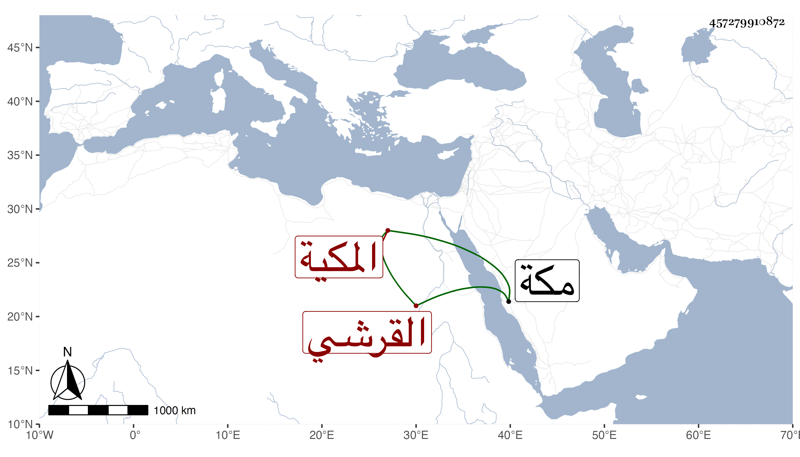

0902Sakhawi.DawLamic.ITO20230111-ara1.EIS1600.457279910872
Biography ID: 457279910872
1001
أم الوفا ابنة أبي الفضل العباس بن أبي المكارم محمد بن أبي البركات محمد ابن أبي السعود محمد بن حسين بن علي بن أحمد بن عطية بن ظهيرة القرشي المكية ، أمها حبشية لأبيها . ولدت سنة سبع وخمسين بمكة . وماتت في جمادى الثانية أو الأولى سنة اثنتين وسبعين بمكة .
